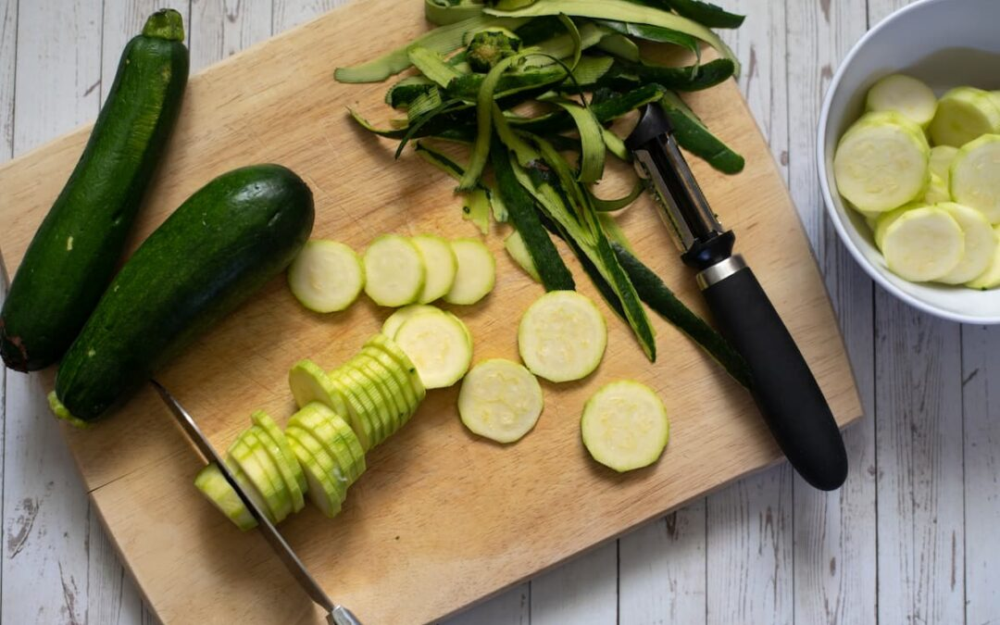
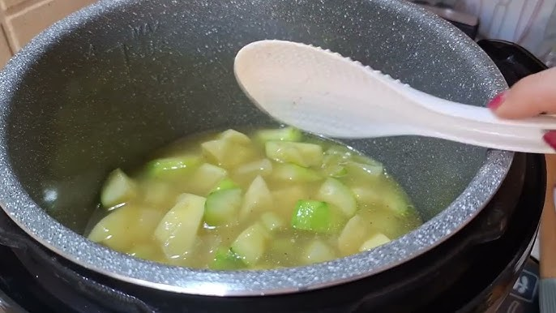
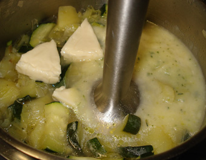
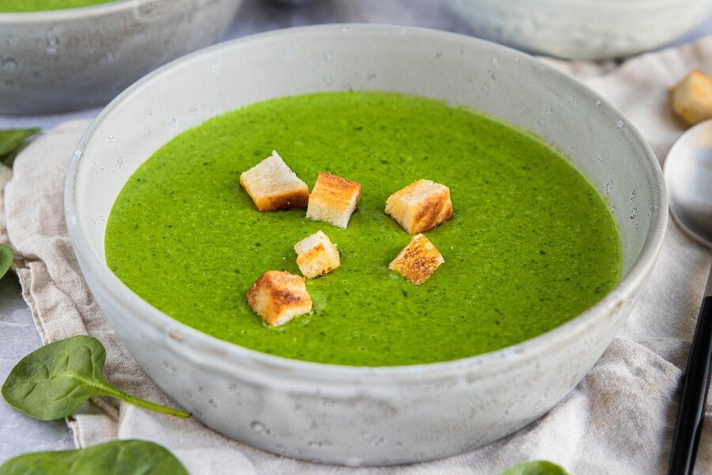
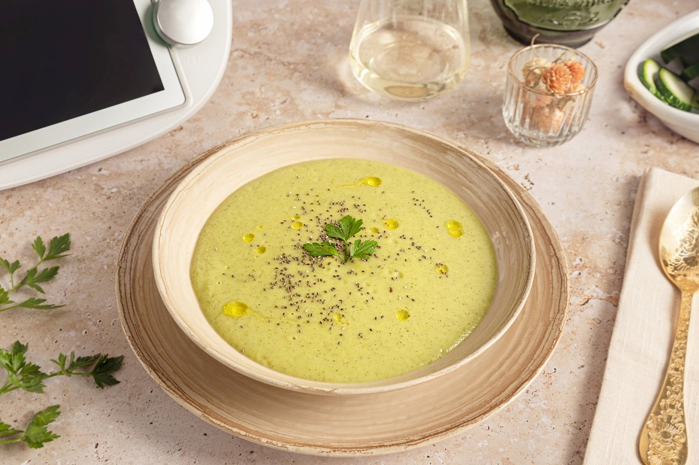

Tronar a la pàgina principal
Crema de Carbassó
Ingredients
- Carbassó
- Porro
- Caldo de verdures o aigua 200ml
- Sali i oli d'oliva verge
Pas a pas
Passos: Crema de Carbassó Ràpida
-
Rentar i tallar a trossos mitjans el carbassó, el porro (o ceba) i la patata (opcional).
Afegir 1 carbassó mitjà, 1/2 porro (o ceba), i 1/4 de patata petita (opcional).

-
En una olla, escalfar l'oli i sofregir el porro a foc mitjà fins que estigui transparent. Afegir 1 culleradeta d'oli d'oliva verge extra.

-
Afegir el carbassó per cobrir amb el caldo o aigua i salpebrar. Deixar coure a foc lent 15-20 minuts. Afegir 200-250 ml de caldo de verdures o aigua i sal/pebre al gust.

-
Retirar del foc i triturar amb una batedora de mà fins a obtenir una crema ben fina. Ajustar de sal si cal.

-
Servir calent, opcionalment amb un rajolí d'oliva o llavors per sobre.

Resultat final
Gaudeix de la teva crema de Carbassó.
